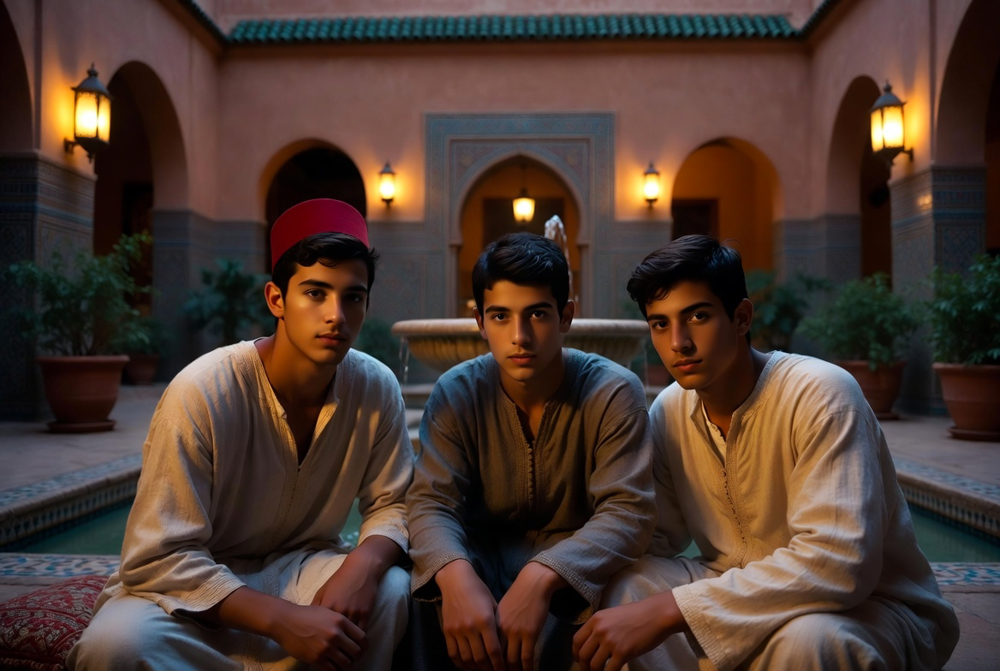

Soutenir le projet
Ce que l'on donne à un jeune homme ne s'arrête pas à lui.

Riad Al-Uns n'existe pas encore. C'est une vision précise, un lieu à trouver, une communauté qui n'a pas commencé. Nous cherchons ceux qui peuvent la porter à son terme — non des sponsors, mais des hommes et des maisons qui comprennent qu'une culture ne se conserve pas dans une vitrine : elle se transmet par des mains, et les mains ne se forment qu'avec du temps et de l'argent.
CE QUE L'ON FINANCE
Des hommes, avant des murs
On peut restaurer une maison de la médina et n'avoir sauvé qu'un décor. Ce que ce projet demande de soutenir n'est pas un bâtiment : c'est ce qui se passe dedans, et ce qui en sort.
Les jeunes hommes qui entreront à Dar al-Hiraf n'y resteront pas toute leur vie. Ils y apprendront un métier de la main — la calligraphie, le zellige, le plâtre et le mocárabe, le tissage, le bois, les essences — et, avec le métier, ce qui le rend tenable : la discipline du jour, la parole gardée, la loyauté envers celui qui travaille à côté de soi, la mesure dans l'usage des biens. Puis ils partiront.
Ils partiront pour devenir ce qu'un homme formé devient : des maris capables de tenir une parole donnée, des pères capables d'élever des fils, des artisans capables de faire vivre un atelier et d'y former à leur tour, des citoyens utiles à leur ville et des sujets fidèles de Sa Majesté le Roi du Maroc.
C'est là que se mesure la portée d'un don : non au nombre de mètres carrés restaurés, mais au nombre de foyers qui tiendront debout dans vingt ans parce qu'un homme, jeune, a reçu un métier et un caractère au lieu de partir sans rien.
UNE CAUSE QUI DÉPASSE LA MAISON
L'artisanat du Royaume
Les métiers d'art marocains ne disparaissent pas faute de beauté ni faute d'acheteurs. Ils disparaissent lorsqu'un maalem vieillit sans avoir trouvé qui recevoir son savoir — et ce moment-là ne se rattrape pas : un métier perdu ne se reconstitue pas à partir de photographies.
La sauvegarde de ce patrimoine vivant est une cause nationale, portée au Maroc par des institutions, des écoles et des associations dont Dar al-Hiraf ne prétend pas prendre la place. La maison apporte ce qui manque le plus souvent à ces efforts : la durée. Non des ateliers de quelques heures, mais une vie commune où le geste est repris chaque jour pendant des années, jusqu'à devenir cette malaka — la qualité stable dont parlait Ibn Khaldūn — qu'aucun stage ne peut donner.
Soutenir cette maison, c'est donc soutenir deux choses à la fois : des hommes qui se forment, et un savoir-faire du Royaume qui trouve où continuer.
COMMENT SOUTENIR
Trois engagements, selon la mesure de chacun
I — LE LIEU
L'acquisition
Trouver et acquérir la demeure. Sans ce premier pas, rien de ce que décrivent ces pages ne commence.
II — LA MAIN
La restauration
Rendre la maison à son état, avec les gestes et les matières justes — le chantier étant lui-même la première école.
III — LA DURÉE
Le fonds de dotation
Un capital dont les seuls fruits couvrent la vie ordinaire de la maison, afin qu'elle ne dépende jamais de la générosité de l'année suivante.
De ces trois engagements, le troisième est le plus rarement compris et le plus décisif. Une maison acquise et restaurée, mais laissée sans dotation, vit tant que dure l'enthousiasme et ferme quand il retombe. C'est ainsi que meurent la plupart des projets de sauvegarde. Le don qui fonde n'est pas celui qui paie les murs : c'est celui qui garantit que dans cinquante ans le feu de l'atelier sera encore allumé.
SOUTENIR UN ÉLÉMENT
On peut aussi porter une seule chose
Tout le monde n'est pas en mesure de fonder une maison. On peut en soutenir une part précise, identifiable, dont on suit ensuite la vie :
L'année d'un maalem
La rémunération d'un maître de métier pendant une année entière de formation.
L'installation d'un atelier
L'établissement complet d'un des six métiers — outillage, établis, matières premières.
La formation d'un apprenti
Le parcours d'un jeune homme, du premier grade jusqu'à la maîtrise de son métier.
Un outil, un métier à tisser
Une pièce d'équipement durable, qui servira des générations d'apprentis successifs.
Les montants correspondant à chacun de ces engagements figurent dans le dossier, communiqué après un premier échange.
CE QUI EST GARANTI
Ce que l'argent ne changera pas
Un mécène a le droit de savoir non seulement ce que son don permettra, mais ce qu'il ne pourra jamais provoquer. Avec les moyens croissent la qualité de la restauration, le nombre de métiers enseignés, la solidité de la dotation.
Ne croissent jamais : le nombre de résidents, la vitesse, le nombre d'hôtes reçus. La maison reste de taille humaine par construction, et non par manque de moyens. Elle ne deviendra pas un établissement d'accueil, ne se transformera pas en musée, n'ouvrira pas de succursale. Ces limites seront inscrites dans les actes qui régissent la maison, non laissées à la bonne volonté du moment.
C'est ce que dit la devise, et elle vaut aussi pour ceux qui donnent : « Le riad est pour les siens, non les siens pour le riad. »
LE NOM DU BIENFAITEUR
Inscrit, non affiché
Dans les villes du Royaume, les madrasas, les fontaines, les hôpitaux et les bibliothèques portent depuis des siècles le nom de qui les a fondés, gravé dans le plâtre ou le marbre et suivi d'une invocation pour son âme. Ce n'est pas de la publicité : c'est la manière dont une communauté se souvient de ses bienfaiteurs et continue de prier pour eux longtemps après leur mort.
Riad Al-Uns suivra cet usage. Le mécène dont la générosité aura rendu la maison possible pourra voir son nom inscrit sur une plaque de l'entrée, dans la langue et selon la forme qu'il choisira, accompagné de l'invocation de bénédiction qui revient à celui qui donne — par exemple :
تَقَبَّلَ اللهُ مِنْهُ وَجَزَاهُ خَيْرًا
« Que Dieu l'accepte de lui et le récompense en bien. »
Un atelier, une bibliothèque, une fontaine ou une dotation peuvent de même porter un nom — celui du donateur, celui de son père, celui d'un défunt dont il souhaite que la mémoire demeure. Et si le mécène préfère le contraire, l'anonymat est entier : rien n'est publié sans accord écrit, et le don discret n'a jamais été tenu pour le moindre.
Le rendu de compte
Un état annuel de l'emploi des fonds et de l'avancement, adressé personnellement.
La maison ouverte
Être reçu au Riad, voir les ateliers au travail, connaître les maîtres et ceux qui apprennent.
Une place, non un rang
La futuwwa vaut dans les deux sens : celui qui soutient est reçu comme un frère aîné, non comme un client.
CE QUI NE S'INTERROMPT PAS
Une aumône qui continue
Un hadith bien connu, rapporté par Muslim, enseigne que lorsque le fils d'Adam meurt, ses œuvres s'interrompent, hormis trois : une aumône qui se prolonge, un savoir dont on tire profit, et un enfant vertueux qui prie pour lui.
Il est rare qu'une seule fondation réunisse les trois. Celle-ci le fait par sa nature même : la dotation est une aumône qui se prolonge ; le métier transmis d'un maalem à un apprenti est un savoir dont on tire profit, et qui se transmettra encore quand celui qui l'a financé ne sera plus là ; et les jeunes hommes formés dans cette maison sont des croyants qui prient — pour leurs parents, pour leurs maîtres, et pour qui a rendu leur formation possible.
C'est là, plus que dans toute contrepartie visible, ce qu'un mécène acquiert en portant ce projet : non un bien qui se consomme, mais une œuvre qui continue de porter du fruit après lui.
UNE LIMITE, UNE SEULE
Le nom, oui — la direction, non
Honorer un bienfaiteur est un devoir ; obéir à un financeur en est un autre, et la maison ne le contractera pas. Le don ne donne pas de voix au chapitre sur la règle de la maison, sur le choix des maîtres, sur l'admission des résidents, sur le rythme des journées ni sur les métiers enseignés. Aucune somme, si considérable soit-elle, n'achète une orientation.
Cette limite ne protège pas seulement la maison : elle protège le don lui-même. Une fondation qui infléchit sa règle au gré de ceux qui la financent cesse assez vite d'être ce qu'on avait voulu soutenir, et le bienfaiteur se retrouve à avoir payé pour autre chose. Ce qui est promis ici, c'est que dans trente ans la maison sera encore celle que ces pages décrivent.
Le mécène qui cherche un instrument docile ne trouvera pas ici son affaire, et il vaut mieux le dire au début qu'à la fin. Celui qui cherche à faire exister quelque chose qui le dépasse est chez lui.
PREMIER PAS
Se déclarer disponible
Rien ne se décide sur un site. Ce formulaire n'engage à aucun versement : il ouvre un échange. Le dossier complet — le lieu, le programme, les chiffres, la structure juridique retenue et le calendrier — est adressé ensuite, personnellement, à qui manifeste un intérêt sérieux.
Toute personne, famille, entreprise ou institution qui souhaite contribuer à la continuité de ce patrimoine est invitée à se faire connaître. Chaque message est lu par le responsable du projet, et par lui seul.
DON DIRECT
Contribuer en ligne
Toutes les générosités ne se discutent pas autour d'une table, et une maison ne se construit pas qu'avec de grands dons. Pour ceux qui souhaitent contribuer simplement, dès maintenant, le versement en ligne est ouvert.
Faire un don
Paiement sécurisé par Stripe — carte bancaire, Apple Pay, Google Pay. Aucune donnée bancaire n'est reçue ni conservée par le Riad.
À ce stade, la maison n'existe pas encore. Les dons reçus aujourd'hui sont affectés à la phase préparatoire — recherche et étude du lieu, expertises, constitution de la structure qui portera le projet — et sont reçus par la société européenne qui conçoit et coordonne le Riad. L'emploi en est rendu chaque année à qui a donné.
Le montant est libre : chacun donne à la mesure de ce qu'il peut et de ce qu'il juge juste. Le don le plus modeste est reçu avec la même gratitude que le plus considérable.
Faire un donPour un soutien régulier, mois après mois — celui sur lequel une maison peut réellement compter — faites-le nous savoir : il est mis en place avec vous et peut être interrompu à tout moment, sans justification.
Pour un engagement important — l'acquisition, la restauration, la dotation — n'utilisez pas ce formulaire de paiement : écrivez-nous d'abord. Ces engagements se traitent de personne à personne, et par virement.